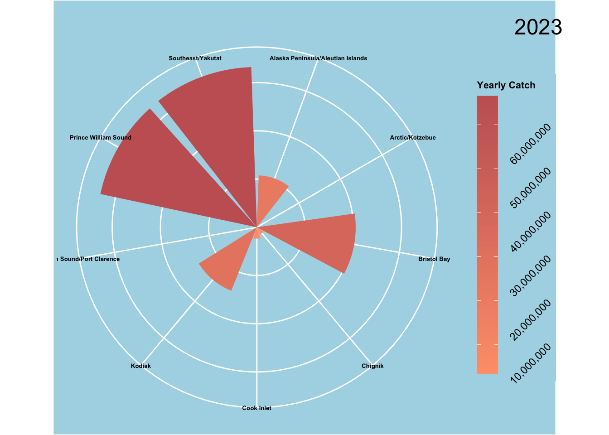
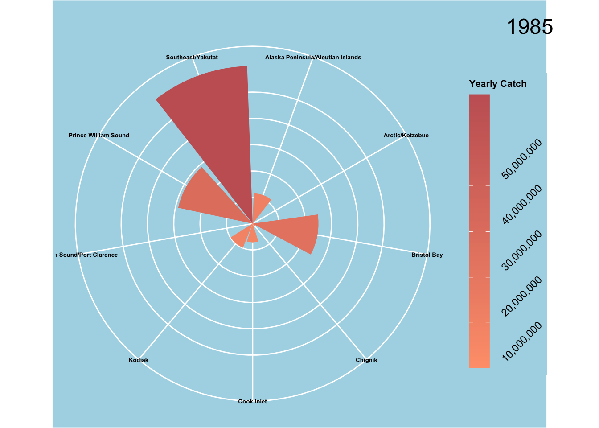
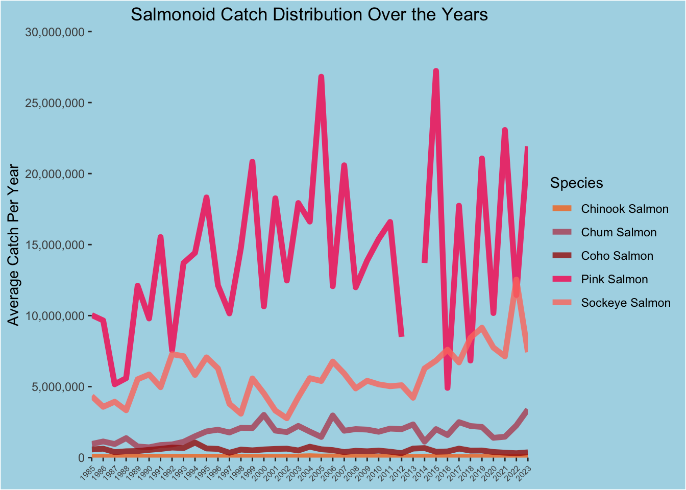
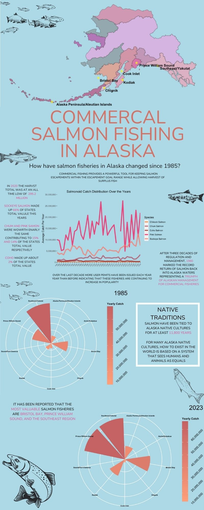

library(tidyverse) # data import, tidying, manipulation, and data visualizations
library(streamgraph) # represent the evolution of a numeric variable for several groups
library(hrbrthemes) #themes and typography
library(plotly) # make interactive, publication quality graphs
library(ggalt) # crs, geoms, statistical transformations
library(jpeg) # read, write, and display images in jpeg form
library(patchwork) # make plot comparisons
library(dplyr) # subset, reshape, join and summarize data
library(ggpubr) # facilitates creations of beautiful ggplot based graphs
library(stringr) # set of functions for making work with strings easy
library(prismatic) # color manipulation
library(Cairo) #create high quality vector (pdf) and outputs
library(scales) # control appearance of axis and legend labels
library(extrafont) # extra fonts
library(GGally) # reduce complexity of combining geometric objects with transformed data
library(sf) # spatial vector data
library(terra) # spatial data with vectors
library(spData) # spatial data anlysis
library(tibble) # create dataframes
library(fmsb) # radar charts
library(ggh4x) # ggplot utility functions
library(urbnmapr) # provides state and county shapefiles
library(showtext) # various fonts
library(ggrepel) # avoid overlapped texts in plots
library(scales) # appearance fo axis and legend labels
library(ggmap) # spatial data and creating maps
library(usmap) # map plotting How Have Salmon Fisheries in Alaska Changed Since 1985
The overarching question of this analysis is “How have salmon fisheries in Alaska changed since 1985?”. In order to tackle this broad question, on a more finite scale, I asked: 1. What is the distribution of yearly fish yields for all five species of salmonoid? 2. How have nine of the most commercially important fisheries changed in terms of yearly catch? 3. Can we see clear trends in the time series data that can be accounted for by changes in Alaskan fisheries management?
The data used in this analysis was a publicly available data set provided by the Alaska Department of Fish and Game. The data set is composed of 9 variables: year, area, species name, number of fish(estimated), landed weight(lbs.), whole weight (lbs.), permit count, processor count, and vessel count. Although all variables are equally important, I modified my data set to only include year, species name, number of fish (estimated), and area in order to make R more computationally efficient. The data set is a .csv and was available through a report including harvest attributed to state managed fisheries, test fisheries, commercial sale o derby fish, and Annette Island fisheries. A better outline of the variables used in this analysis are listed below.
- Year: the year the landings occurred as recorded on ADF&G fish tickets
- Area: Areas define by groupings of statistical areas as recorded on ADF&G
- Species name: The species as recorded on ADF&G fish tickets
- Number of fish (estimated): Number of animals is a count of each species in the catch or harvest.
Another data set was used in order to spatially map nine commercially important fisheries on top of a pre-existing Alaska shapefile. The shapefile was publicly available and provided by iGismap, an online data platform that provides GIS maps.
Design elements
This analysis required an exact approach and design
Graphic form The graphic forms I used were a radar plot, a line chart, and a geo-spatial map. I wanted to explore more complex styles in this analysis, and I felt that the radar plot provided an aesthetically pleasing chart, one that resembled a sonar on a boat, for visualization of salmon catch by region in 1985 and 2023 to show change overtime. For the line graph I wanted to clearly show the distribution in salmon catch by year by species to create a visualization that included all components of my data set. I used this graph as my primary plot because I felt that any viewer of this info graphic would be able to gather the main takeaways of the analysis from a quick glance. Finally, I created a map to add a geographic context to show fisheries proximity to one another and locations in Alaska as well as provide the viewer with a non-complex visualization.
Text For most of my visuals I changed the aesthetics of the labels as well as the titles. I used limited text in most of my plots, except the line chart because I felt that the radar plot spoke for itself and would be crowded with excess information. A lot of information can be gathered from a radar plot with simply a categorical and numeric. For the map, I removed latitude and longitude values to make it look cleaner but included labels to clearly display the fisheries locations. Finally, the line chart included all text components except grid lines because I felt a viewer can still see clear patterns in the data set without minor and major lines. I also included all years on the x- axis for it to be an effective time series visualization.
Themes I altered the theme elements pretty drastically in all three of my plots. This was necessary to have the text aesthetics, outlined above, that I wanted. Most theme elements included changes in legends, color bars, ticks, titles, the panel, and major and minor grid line.
Colors I used salmon themed color palettes found online and a light blue background to resemble water.
Typography I used the same font for each visualization so that it would be cohesive in the infographic.
General design In my infographic, I let the visualizations speak for themselves by only including brief comments in order to tie the visualizations together with more background information. As stated above, I also centered and increased the size of my question and the line chart so that the viewer focuses their attention on the most important aspects and the main takeaways from this info graphic. I also used the same color scheme (salmon color hex codes) for the text and the visualizations
Contextualizing the data I was able to conceptualize the data by using the same time scale throughout all visualizations. I also stayed consistent with using number of fish (estimated) as the primary metric for fishery success.
Centering your primary message I used my line graph as the center of my infographic and printed my primary question above it in order to highlight the main takeaway before a viewer dives deeper into the more complex visualizations.
Considering accessibility (e.g. colorblind-friendly palettes / contrast, alt text) I highlighted specific words in my infographic so that viewers can gather the main message by skimming the page rather than having to read through all of the text.
Applying a DEI lens to your design Salmon fisheries are a major part of Alaska’s economy and have provided native tribes with food for the last century. Unfortunately, over fishing of Alaska salmon and other native fish, by international fishing companies, have diminished food resources as well as impacted historic cultural significance. Although this analysis was able to provide insight into the change in fisheries overtime, it doesn’t dissect the sustainability of these fisheries, who profits the most, who receives the majority of the catch, or how indigenous populations are affected. This is a primary analysis and can be greatly improved in terms of a DEI lens.
The Analysis
Load libraries
Data read in
# load data ----
alaska_state <- read_csv("/Users/katebecker/Documents/Bren/Winter/240/final/Becker-eds240-HW4/data/Alaska-Statewide.csv")
# clean the data frame to lower snake case ----
alaska <- alaska_state %>%
janitor::clean_names()Initial wrangling of primary dataframe for 2023 plot
# 2023 wrangling ----
# convert area variable in alaska dataframe to type factor
alaska$area <- as.factor(alaska$area)
# filter for year 2023, group by area, find the mean and sum of number_of_fish_estimated and create new columns, round to zero digits
summary_stats <- alaska %>%
filter(year == "2023") %>%
group_by(area) %>%
summarise(mean_fish = mean(number_of_fish_estimated),
sum_fish = sum(number_of_fish_estimated)) %>%
mutate(mean_fish= round(mean_fish, digits = 0))
# new dataframe grouped by area and with count column
Nrs <- alaska %>%
group_by(area) %>%
count()
# left join both dataframes into one by the area variable
summary_all <- left_join(summary_stats, Nrs, by = "area")2023 Fishery Yields
# create radar plot with summary_all dataframe ----
# encode area vector as a factor and sort area levels
summary_all$area <- factor(summary_all$area, levels = sort(unique(summary_all$area)))
# make a ggplot
ggplot(summary_all) +
# use geom_col with area on x axis and total fish sums on y
geom_col(aes(
x = area,
y = sum_fish,#is numeric
fill = sum_fish),
show.legend = TRUE,
) +
# apply color scale to values and create a scale
scale_fill_gradient(low = "#FFA07A", high = "#C66264", name = "Yearly Catch", labels = comma, breaks = c(0, 10000000, 20000000, 30000000, 40000000, 50000000, 60000000)) + #))
# convert sum_fish values from exponential to whole numebrs separatedby commas
scale_y_continuous(labels = scales::comma) +
# add y label
labs(y = "Estimated Catch") +
# change colourbar aesthetics
guides (fill = guide_colourbar(direction = "vertical", barheight = 16)) +
# using theme() function change aesthetics to plot and panel
theme(axis.title.x=element_blank(),
axis.ticks.x=element_blank(),
axis.text.x = element_text(size=5, color = "black", face = "bold"),
axis.text.y=element_blank(),
axis.title.y=element_blank(),
axis.ticks.y = element_blank(),
plot.background = element_rect(fill = "lightblue"),
panel.background = element_rect(fill = "lightblue"),
panel.grid = element_line(color = "white"),
legend.position = "right",
legend.title = element_text(colour="black", size=8,
face="bold"),
legend.text = element_text(angle = 45, hjust = 1, color = "black"),
legend.background = element_rect(fill = "lightblue"),
plot.margin = unit(c(0.01, 0.01, 0.01, 0.01), "lines"),
plot.title = element_text(size = 18, hjust=1.3, vjust = -3.0, color = "black"),
panel.spacing = unit(4, "lines")) +
# add title
ggtitle("2023") +
# converts chart to have polar units
coord_polar()
Initial wrangling of primary dataframe for 1985 plot
# 1985 wrangling ----
# convert area variable to a factor
alaska$area <- as.factor(alaska$area)
# create summary stats variable by filtering for 1985 year, group by area, create new columns for mean and summary values for number_of_fish_estimated values
summary_stats_85 <- alaska %>%
filter(year == "1985") %>%
group_by(area) %>%
summarise(mean_fish_85 = mean(number_of_fish_estimated),
sum_fish_85 = sum(number_of_fish_estimated)) %>%
mutate(mean_fish_85= round(mean_fish_85, digits = 0))
# new dataframe grouped by area with number of counts
Nrs_85 <- alaska %>%
group_by(area) %>%
count()
# left join dataframes by the area variable
summary_all_85 <- left_join(summary_stats_85, Nrs_85, by = "area")
# remove fisheries with NA, not comparable year to year
summary_all_85 <- summary_all_85 %>%
filter(!row_number() %in% c(7,11))
# encode area vector as a factor and sort area levels
summary_all_85$area <- factor(summary_all_85$area, levels = sort(unique(summary_all_85$area)))1985 Fishery Yields
# create radar plot with summary_all dataframe ----
# ggplot2 of summary_all_85 data
ggplot(summary_all_85) +
# use geom_col with area on x axis and total fish sums on y axis
geom_col(aes(
x = area,
y = sum_fish_85,#is numeric
fill = sum_fish_85),
show.legend = TRUE,
stat = "identity"
) +
# add color scale for number_of_fish_estimated values
scale_fill_gradient(low = "#FFA07A", high = "#C66264", name = "Yearly Catch", labels = comma, breaks = c(0, 10000000, 20000000, 30000000, 40000000, 50000000, 60000000)) +
# add y label
labs(y = "Estimated Catch") +
# change colour bar aesthetics
guides (fill = guide_colourbar(direction = "vertical", barheight = 16)) +
# using theme() to change plot and panel aesthetics
theme(axis.title.x=element_blank(),
axis.ticks.x=element_blank(),
axis.text.x = element_text(size=5, color = "black", face = "bold"),
axis.text.y=element_blank(),
axis.title.y=element_blank(),
axis.ticks.y = element_blank(),
plot.background = element_rect(fill = "lightblue"),
panel.background = element_rect(fill = "lightblue"),
panel.grid = element_line(color = "white"),
legend.position = "right",
legend.title = element_text(colour="black", size=8,
face="bold"),
legend.text = element_text(angle = 45, hjust = 1, color = "black"),
legend.background = element_rect(fill = "lightblue"),
plot.margin = unit(c(0.01, 0.01, 0.01, 0.01), "lines"),
plot.title = element_text(size = 18, hjust=1.3, vjust = -3.0, color = "black"),
panel.spacing = unit(4, "lines")) +
# add title
ggtitle("1985") +
# converts chart to have polar units
coord_polar()
Fisheries data wrangling
# data wrangling for fisheries locations ----
# create a new data frame with latitude and longitude values of the fisheries used in this analysis
regions <- data.frame(
lon = c(-173.5, -160.6391, -158.4045, -152.644, -152.407, -147.0971, -139.73),
lat = c(52.09, 57.99, 56.295, 59.37, 57.79, 60.6905, 59.547),
area = c("Alaska Peninsula/Aleutian Islands", "Bristol Bay", "Chignik", "Cook Inlet", "Kodiak", "Prince William Sound", "Southeast/Yakutat")
)
# merge summary statistics and lat and long values for independent fisheries in one data frame
geo <- merge(summary_all, regions)
# make geo dataframe an sf object and set coordinate reference system
geo <- geo |>
st_as_sf(coords = c("lon", "lat"), crs = "EPSG:4269")Initial read in and wrangling of Alaska shapefile
# read in alaska shapefile ----
ak_regions <- st_read("/Users/katebecker/Documents/Bren/Winter/240/final/Becker-eds240-HW4/data/shapefile_demo_data/ak_regions_simp.shp")Reading layer `ak_regions_simp' from data source
`/Users/katebecker/Documents/Bren/Winter/240/final/Becker-eds240-HW4/data/shapefile_demo_data/ak_regions_simp.shp'
using driver `ESRI Shapefile'
Simple feature collection with 13 features and 3 fields
Geometry type: MULTIPOLYGON
Dimension: XY
Bounding box: xmin: -179.2296 ymin: 51.15702 xmax: 179.8567 ymax: 71.43957
Geodetic CRS: WGS 84Map of Alaskas Most Commerically Important Salmon Fisheries
# coordinate reference system ----
# transform alaska shapefile to crs of 3338
ak_regions_3338 <- ak_regions %>%
st_transform(crs = 3338)
# transfrom geo spatial object to crs of 3338
geo_3338 <- geo %>%
st_transform(crs = 3338)
# assign a color for each region in alaska by hex code
my_colors <- c("Aleutian Islands" = "#bf0452",
"Chignik" = "#e8a9ca",
"Bristol Bay" = "#FF7F50",
"Kodiak" = "#FF7799",
"Cook Inlet" = "#ef586d",
"Prince William Sound" = "#f5237b",
"Southeast" = "#FF91A4",
"Norton Sound" = "#b7138c",
"Arctic" = "#ee6088",
"Bristol Bay" = "#FD7C6E",
"Copper River" = "#d35b8d",
"Yukon" = "#f697dd"
# Add more regions and corresponding colors as needed
)
# create map of alaska and fisheries ----
# initial ggplot using geom_sf for alaska shapefile and fill by region
alaska_regions <- ggplot() +
geom_sf(data = ak_regions_3338, aes(fill = region, alpha = 0.4))+
scale_fill_manual(values = my_colors) + # apply colors specified above toe ach region
theme(axis.title.x=element_blank(), # use theme argument to chane panel and plot aesthetics
axis.ticks.x=element_blank(),
axis.text.x = element_text(),
axis.text.y=element_blank(),
axis.title.y=element_blank(),
axis.ticks.y = element_blank(),
panel.background = element_rect(fill = "lightblue"),
panel.grid.major = element_blank(),
legend.position = "bottom",
legend.title = element_text(colour="black", size=12),
legend.text = element_text(family = "josefin",
size = 8)) +
# change aesthetics of legend
guides(fill = guide_legend(override.aes = list(alpha = 0)))
# add fisheries spatial object to alaska regions plot
final_alaska <- alaska_regions +
geom_sf(data = geo_3338, color = "yellow", shape = 8, size = 2) + # set points to yellow starts
geom_sf_text( # add labels to map specifying the fishery name
data = geo,
aes(label = area, hjust = -0.08, vjust = 1.5),
check_overlap = TRUE,
size = 3,
color = "black",
fontface = "bold") +
geom_label_repel() + # repel labels so no overlap
theme(legend.position = "none")
# visualize map
final_alaska 
Time Series of Average Salmonoid Catch Each Year Since 1985
# create time series plot ----
# get rid of na values in alaska data frame
cleaned_alaska <- na.omit(alaska)
# Calculate averages of number_of_fish_estimated grouped by year and species_name
averaged_alaska <- cleaned_alaska %>%
group_by(year, species_name) %>%
summarize(avg_number_of_fish = mean(number_of_fish_estimated))
# create ggplot
averaged_alaska %>%
ggplot( aes(x=year, y= avg_number_of_fish, group=species_name, color=species_name)) + # set x axis to year from 1985 to 2023 with number of fish estimates per year by species
geom_line(linewidth = 2, alpha = 0.8) + # add lines
scale_y_continuous(labels = scales::comma, limits = c(0,30000000), breaks = seq(0, 30000000, by = 5000000), expand =c(0,0)) + # change y axis aesthetic to change exponential values to whole values separated by commas
scale_x_continuous(breaks = unique(averaged_alaska$year), expand = c(0,0)) + # x axis includes all values of year variable
ggtitle("Salmonoid Catch Distribution Over the Years") + # add title
theme(axis.title.x = element_blank(), # change theme of plot and panel using theme()
axis.text.x = element_text(angle = 45, hjust = 1, size = 6),
panel.grid.major = element_blank(),
panel.grid.minor = element_blank(),
panel.background = element_rect(fill = "lightblue"),
plot.background = element_rect(fill = "lightblue"),
legend.background = element_rect(fill = "lightblue"),
plot.title = element_text(hjust = 0.5)
) +
# change aesthetics of legend
guides(color = guide_legend(title = "Species", override.aes = list(size = 4))) +
labs(y = "Average Catch Per Year") + # add y label
# apply colors to each species
scale_color_manual(values = c("#f67825", "#b85265","#a51d0e", "#f9295f","#FD7C6E"))
Final Infographic

Citation
BibTeX citation:
@online{becker2024,
author = {Becker, Kate},
title = {Salmon {Fisheries} in {Alaska}},
date = {2024-03-14},
url = {https://www.npfmc.org/wp-content/PDFdocuments/fmp/Salmon/SalmonFMP.pdf},
langid = {en}
}
For attribution, please cite this work as:
Becker, Kate. 2024. “Salmon Fisheries in Alaska.” March 14,
2024. https://www.npfmc.org/wp-content/PDFdocuments/fmp/Salmon/SalmonFMP.pdf.